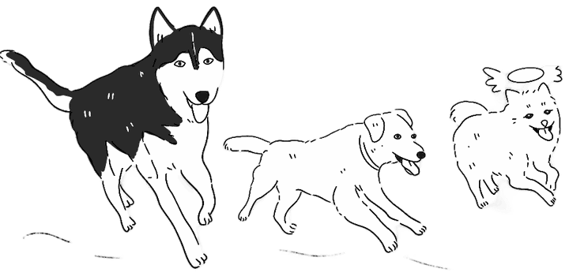

The map
Where we eat, drink and linger
Choose a category, then explore directly on the map — drag to move, pinch or scroll to zoom. Tap any place to read why it earned its spot. The two gold plaques are the wedding itself; they stay on the map whatever you are browsing.

Loading the map…Loading…